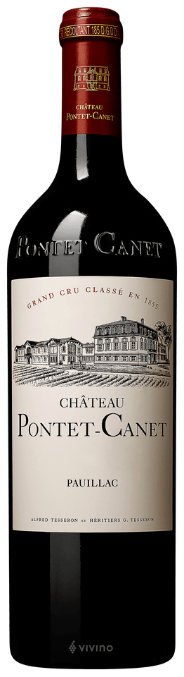

| 年份 (Vintage) | 2015 |
|---|---|
| 產區 (Appellation) | Pauillac |
| 酒莊分級 (Classification) | Pauillac |
| 葡萄品種 (Grape Variety) | Cabernet Sauvignon, Merlot Blend |
| 適飲期 (Drink Window) | 2027 - 2045+ |
| 評分 (Scores) | JS 98 / RP 96 / WS 94 / WE 97 |
五級酒莊。生物動力法的先驅，生產極其純淨、濃郁且充滿活力的葡萄酒。
品飲筆記：
「完美的三部曲終章」。風格回歸經典，酒體飽滿，結構宏大，果味濃郁且集中，單寧細緻但強勁。年輕時略顯嚴肅，需要時間展現其深度與複雜度。
🍽️ 餐酒搭配：炭烤牛排、烤羊排、蔥爆牛肉、紅燒肉、黑胡椒牛柳、硬質乳酪（如Cheddar, Comté）。
⏳ 適飲期：2027 - 2045+
VIP 專屬顧問服務 | 請來電確認庫存與配額
+886-2-2791-2147